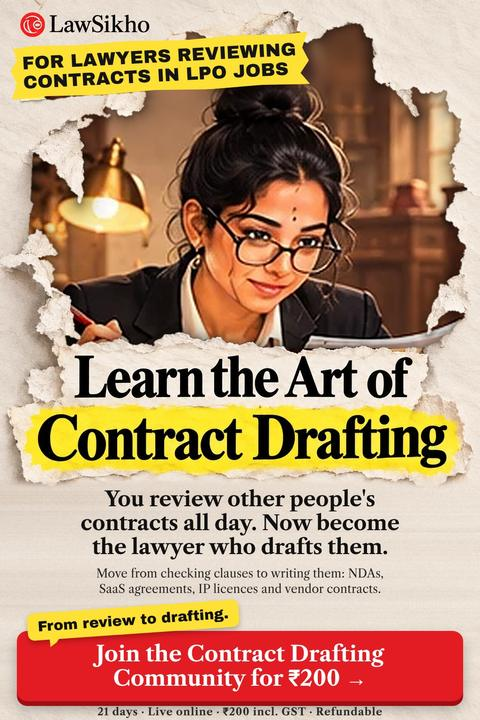

Move from checking clauses to writing them: NDAs, SaaS agreements, IP licences and vendor contracts.
What is contract drafting? Contract drafting is writing the agreements a business signs: who does what, who pays, and who carries each risk.
LawSikho Contract Drafting Community · 21 Oct to 11 Nov · 9 live evening sessions · one document a day
Including GST. Refundable.
All 21 days, live online.
₹200 incl. GST · Refundable · Live online · 21 Oct to 11 Nov

Your day runs on review queues. You read a contract, mark the missing indemnity, flag the odd governing law clause and send it back. Some weeks the queue never ends. You are fast and accurate, and your team relies on that.
That eye is valuable. Yet the drafting happens somewhere else, by a lawyer who talks to the client and shapes the deal. You want to be that lawyer. You know which clauses fail and why. The good news is that reviewing has already trained most of what drafting needs.
A drafting lawyer sits closer to the client. Startups and growing businesses need someone to turn a deal into clear terms before anyone signs. That person asks the questions, chooses the clauses and owns the document. Your review habit becomes the quality check you run on your own drafts. Over time, this kind of work tends to pay better than queue review, because businesses value the person who shapes the deal.
Join the Contract Drafting Community for ₹200₹200 incl. GST · Refundable · Live online · 21 Oct to 11 Nov
Some teams do move reviewers to drafting, but those slots are small and slow to open. You stay inside the same review workflow, waiting for a turn that may not come.
Samples teach you what a finished contract looks like. They do not teach you why each clause is there, so you cannot defend a choice when a client asks.
Books explain doctrine well. They rarely put a blank page in front of you, a client brief beside it, and ask you to write the clause yourself by evening.
You do not lack knowledge or effort. You have spent years reading clauses closely. What is missing is the habit of starting from nothing, and being seen as the person who drafts. That comes from writing one document a day, learning in live sessions how clients and partners think, and showing your drafts where businesses can find them.
Businesses that hold customer or staff data need privacy policies and vendor terms written.
Source: DPDP Rules 2025, MeitY, notified 14 Nov 2025; PIBEach one signs founder, hiring and vendor contracts, and most have no lawyer on staff.
Source: DPIIT data via Inc42; Manorama Yearbook, Apr 2026Most are small firms. Each one that collects customer data needs a privacy notice, drafted from anywhere.
Source: UK Department for Business and Trade, Business population estimates 2025, Oct 2025LPO work is not a detour. It has trained you in the exact habits clients pay a drafter for: speed, precision and a nose for risk in the small print. Here is how each one carries across when you sit down to write your own contract.
₹200 incl. GST · Refundable · Live online · 21 Oct to 11 Nov
One document you practise is the representations and warranties clause. You have checked many of these. Now you decide what the supplier promises, what is left out and how long each promise lasts after delivery.
| Learning alone from samples | A long theory course | Contract Drafting Community | |
|---|---|---|---|
| Time | Open-ended | Months | 21 days |
| What you produce | Copies of other people's drafts | Notes and exams | Practice on 16 business documents |
| Live practice | None | Lectures | 9 live evening sessions |
| Reaching clients | Left to you | Rarely covered | UK small businesses, startups, LinkedIn, a first article |
| Cost to you | Your time | A large fee | ₹200 incl. GST, refundable |
The fee is ₹200 including GST, and it is refundable. You need no drafting experience on day one.
Join the Contract Drafting Community for ₹200₹200 incl. GST · Refundable · Live online · 21 Oct to 11 Nov
The live sessions run in the evening, and the daily reading and quiz arrive on WhatsApp, so you can finish them on a break. If a shift runs late, you still have that day's document to draft in your own time.
You already know what a finished clause should say, which is the hard part. The community starts from the parts of a contract and adds one document a day, so the drafting habit builds step by step rather than all at once.
Sessions are live and recordings are not promised. The daily reading and quiz stay in the WhatsApp group, so you can keep up with the documents on your own time.
"I check contracts for a living. For ₹200 and 21 days, I am learning to write them."
Bring the eye you built in review. Leave with drafts of your own, a clearer plan for reaching business clients, and a LinkedIn profile that says you draft contracts.
21 days, 21 Oct to 11 Nov. 9 live evening sessions. ₹200 including GST, refundable.
Join the Contract Drafting Community for ₹200₹200 incl. GST · Refundable · Live online · 21 Oct to 11 Nov
LawSikho runs this community to build practical drafting skills and show where the earning opportunities are. We do not promise any job, client or income. Sessions are live; recordings are not promised.